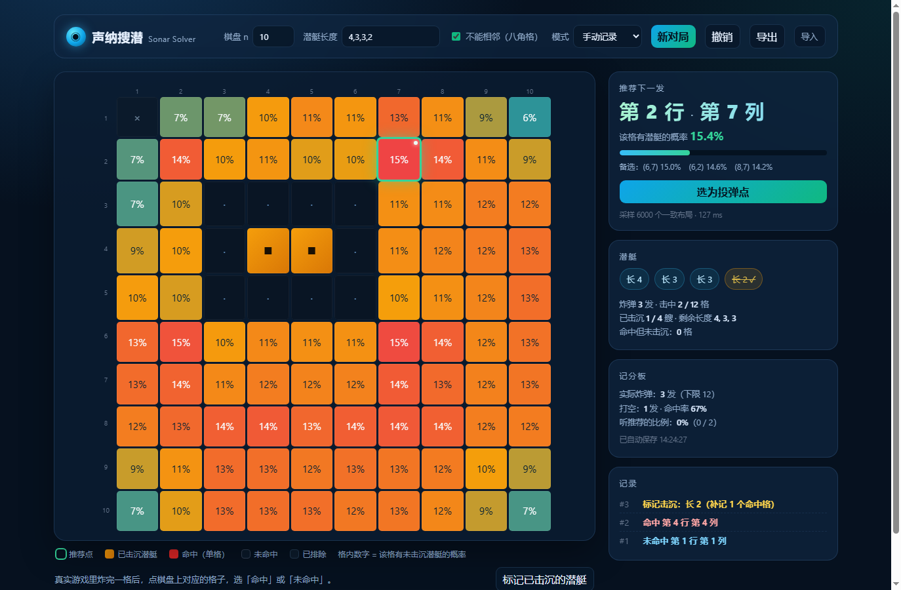

声纳活动里，海里藏着几艘潜艇，你用水雷一格一格炸。手感上全凭直觉， 但其实每一发都可以算出来该炸哪 —— 这个页面就是那个算法，以及它到底能省多少。
瞎炸 95 发 → 按概率炸 40 发
10×10 的棋盘、六艘潜艇（长度 5,4,4,3,3,2）。同样的棋盘重复很多局取平均： 随机炸平均 95.2 发，按概率炸平均 39.7 发 —— 少一半还多。
这个玩法里，炸中一格只亮一格，必须把整艘潜艇每一格都炸到，它才算被击沉。 所以：炸弹数 = 潜艇总格数 + 打空的次数。总格数是固定的， 真正能省的只有“打空”。
于是每发炸弹只做一件事：把所有“目前还说得通”的潜艇布局摆出来， 数一数每一格有多大概率有潜艇，炸概率最高的那格。
炸空一格，这些布局会整体调整；炸中一格，相邻格子的概率会明显变高 —— 因为潜艇是连在一起的一条。所以“命中之后就顺着这条线补枪”， 不是额外写的规则，是概率自己冒出来的。

| 棋盘 | 潜艇长度 | 按概率炸 | 随机炸 |
|---|---|---|---|
| 8×8 | 3,3,2 | 23.8 | 57.5 |
| 10×10 | 4,3,3,2 | 35.7 | 94.5 |
| 10×10 | 5,4,4,3,3,2 | 39.7 | 95.2 |
| 12×12 | 5,4,4,3,3,2 | 50.9 | 138.5 |
单位：发。每行是几百局随机棋盘的平均值。
每步都炸概率最高的格子，属于贪心，不保证全局最优。 我在四乘四的小棋盘上算过真正的最优：最优 6.111 发、贪心 6.167 发，差不到 1%—— 而棋盘一大，算严格最优的代价就没边了。所以它是“足够好的近似”，不是最优解。